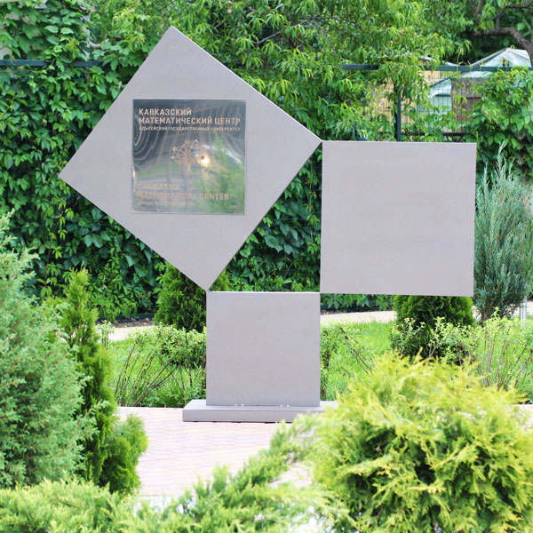

01 / Геометрия
Теорема Пифагора
Заполненный пример
Математическая идея
Пусть у треугольника есть прямой угол. Назовём две образующие этот угол стороны a и b , а противоположную сторону — c . Для их длин выполняется равенство:
a 2 + b 2 = c 2
Если на каждой стороне построить квадрат, площадь самого большого квадрата совпадёт с общей площадью двух меньших. Так алгебраическое равенство можно прочитать как утверждение о площадях.
Попробуйте объяснить
Почему подходят числа 3, 4 и 5?
Вычислите 3 2 + 4 2 и сравните с 5 2 . Затем проверьте тройку 5, 12, 13. Нарисуйте квадраты на сторонах треугольника и подпишите их площади.
Проверка рассуждения
9 + 16 = 25; 25 + 144 = 169. В обоих случаях сумма квадратов двух чисел равна квадрату третьего.
Фотографии экспоната
Нажмите фотографию, чтобы рассмотреть её.


Фотографии из коллекции исходного сайта.
Страница оригинала
«Теорема Пифагора» на museum.adygmath.ru ↗
Это учебная страница собственной копии сайта.